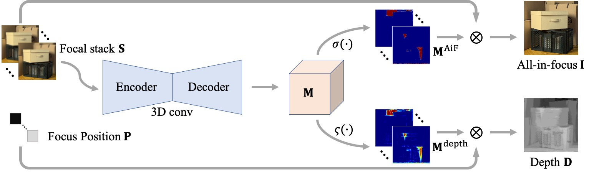
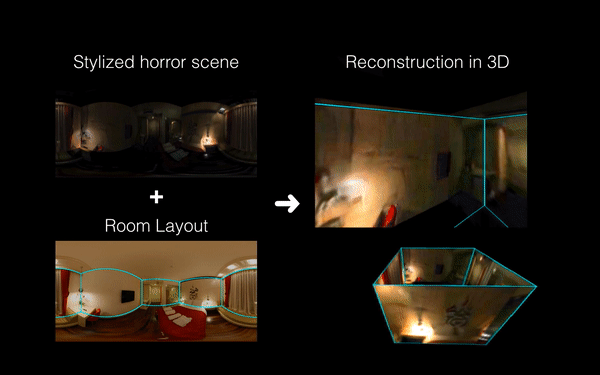
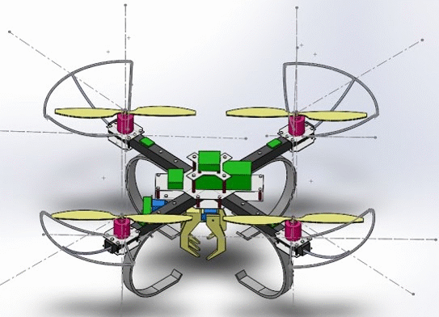
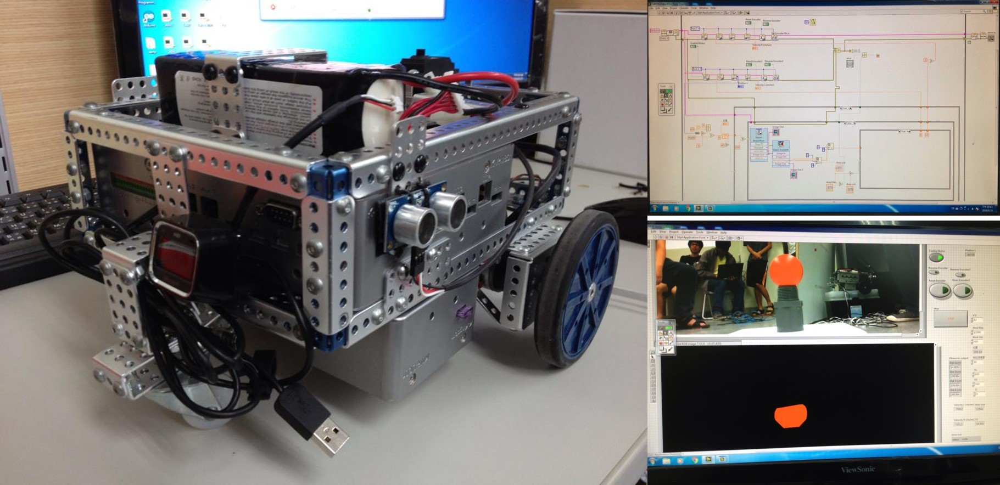
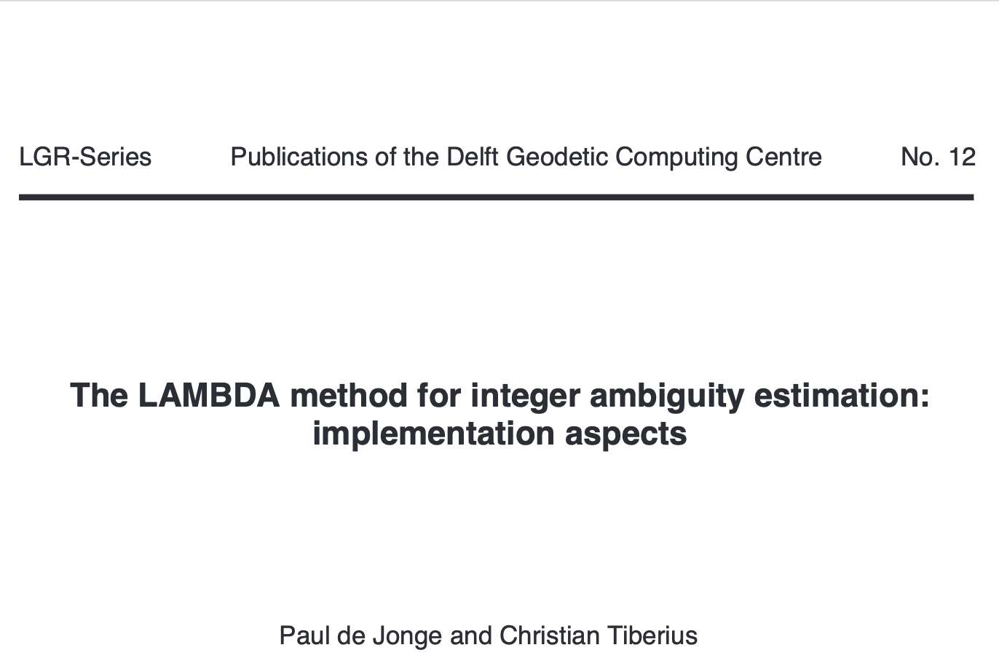

|
| CV |
Google Scholar |
Github |
|
I am a Machine Learning Engineer at Taiwan AILabs, focusing on Computer Vision and Machine Learning.
I received my Master's degree in
Electrical Engineering
from
National Tsing Hua University (NTHU),
advised by Prof.
Min Sun, and my Bachelor's degree in Mechanical Engineering from National Chiao Tung University.
During my graduate research, I was fortunate to collaborate with
Prof. Wei-Chen Chiu
and
Dr. Yi-Hsuan Tsai
on 360° Stereo Depth Project and
Prof. Hwann-Tzong Chen
on Planar Reconstruction.
During the last semester and the following year, I had a wonderful time as a Computer Vision research intern at MediaTek, Taiwan, working on Depth Estimation, All-in-Focus Reconstruction, and Computational Photography.
|
{kind=link}
|
Taiwan AILabs |
MediaTek, Taiwan |
NTHU |
Atos |
NCTU |
|---|
|
|  |
webpage |
abstract |
bibtex |
arXiv |
code
Depth estimation is a long-lasting yet important task in computer vision. Most of the previous works try to estimate depth from input images and assume images are all-in-focus (AiF), which is less common in real-world applications. On the other hand, a few works take defocus blur into account and consider it as another cue for depth estimation. In this paper, we propose a method to estimate not only a depth map but an AiF image from a set of images with different focus positions (known as a focal stack). We design a shared architecture to exploit the relationship between depth and AiF estimation. As a result, the proposed method can be trained either supervisedly with ground truth depth, or unsupervisedly with AiF images as supervisory signals. We show in various experiments that our method outperforms the state-of-the-art methods both quantitatively and qualitatively, and also has higher efficiency in inference time.
@inproceedings{Wang-ICCV-2021,
author = {Wang, Ning-Hsu and Wang, Ren and Liu, Yu-Lun and Huang, Yu-Hao and Chang, Yu-Lin and Chen, Chia-Ping and Jou, Kevin},
title = {Bridging Unsupervised and Supervised Depth from Focus via All-in-Focus Supervision},
booktitle = {International Conference on Computer Vision},
year = {2021}
}
|
|
abstract |
bibtex |
arXiv |
code
Indoor panorama typically consists of human-made structures parallel or perpendicular to gravity. We leverage this phenomenon to approximate the scene in a 360-degree image with (H)orizontal-planes and (V)ertical-planes. To this end, we propose an effective divide-and-conquer strategy that divides pixels based on their plane orientation estimation; then, the succeeding instance segmentation module conquers the task of planes clustering more easily in each plane orientation group. Besides, parameters of V-planes depend on camera yaw rotation, but translation-invariant CNNs are less aware of the yaw change. We thus propose a yaw-invariant V-planar reparameterization for CNNs to learn. We create a benchmark for indoor panorama planar reconstruction by extending existing 360 depth datasets with ground truth H&V-planes (referred to as "PanoH&V" dataset) and adopt state-of-the-art planar reconstruction methods to predict H&V-planes as our baselines. Our method outperforms the baselines by a large margin on the proposed dataset.
@inproceedings{SunHWSC21,
author = {Cheng Sun and
Chi{-}Wei Hsiao and
Ning{-}Hsu Wang and
Min Sun and
Hwann{-}Tzong Chen},
title = {Indoor Panorama Planar 3D Reconstruction via Divide and Conquer},
booktitle = {CVPR},
year = {2021},
}
|
|

|
webpage |
abstract |
bibtex |
arXiv |
code
Recently, end-to-end trainable deep neural networks have significantly improved stereo depth estimation of perspective images. However, 360° images captureed under equirectangular projection cannot benefit from directly adopting existing methods due to distortion introduced (i.e., lines in 3D arenot projected into lines in 2D). To tackle this issue, we present a novel architecture specifically designed for spherical disparity using the setting of top-bottom 360° camera pairs. Moreover, we propose to mitigate the distortion issue by: 1) an additional input branch capturing the position and relation of each pixel in the spherical coordinate, and 2) a cost volume built upon a learnable shifting filter. Due to the lack of 360° stereo data, we collect two 360° stereo datasets from Matterport3D and Stanford3D for training and evaluation. Extensive experiments and ablation study are provided to validate our method against existing algorithms. Finally, we show promising results on real-world environments capturing images with two consumer-level cameras
@inproceedings{wang20icra,
title = {360SD-Net: 360$^{\circ} Stereo Depth Estimation with Learnable Cost Volume },
author = {Ning-Hsu Wang and Bolivar Solarte andYi-Hsuan Tsai and Wei-Chen Chiu and Min Sun},
booktitle = {International Conference on Robotics and Automation (ICRA)},
year = {2020}
}
|

|
| code | |
|  |
|
|  |
|
|  |
|
|  |
|
|
Template from this awesome website. |